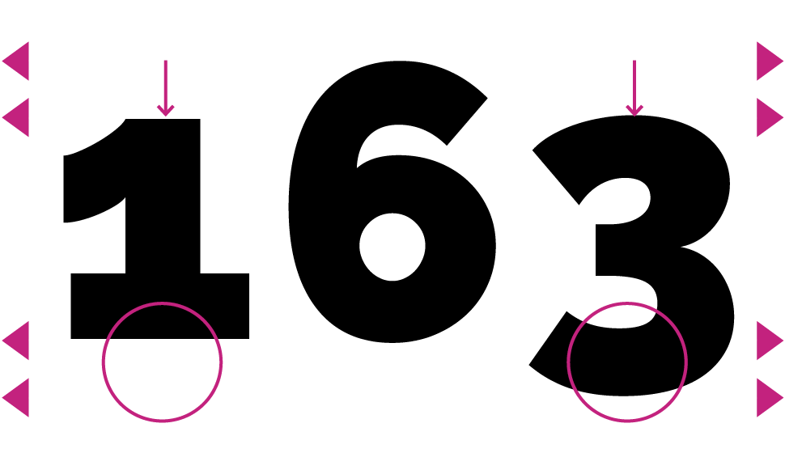

Minuskel- &
MAJUSKELziffern
SfGZ IAD2019 • Dominique Willi
Min… Maj… was?
Die beiden Begriffe Minuskel und Majuskel sind im Grunde genommen Synonyme für Klein- und Grossbuchstaben. Nun denkt man sich vielleicht, was das mit Ziffern zu tun hat.
Doch auch hier gibt es Unterschiede. Betrachten wir zuerst die Majuskelziffern: Darunter versteht man Ziffern, welche die gleiche Höhe wie Versalien vorweisen. Bei solchen Ziffern tritt oft das Problem auf, dass sie im Lauftext unruhig wirken und dadurch stark ins Auge fallen. Dann ist zu empfehlen, diese im Lauftext zu verkleinern. So wird die zuvor genannte Problematik optisch etwas ausgeglichen. Gezielt angegangen wird diese typografische Unschönheit jedoch mit den sogenannten Minuskelziffern.
Majuskelziffern
Versalziffern

Minuskelziffern
Mediävalziffern

Gutenberg
Johannes Gutenberg (1400–1468) war ausschlaggebend für die Durchsetzung der Arabischen Zahlenschreibweise in Europa.
Davor wurden vor allem die Römischen Ziffern verwendet. Mit den Minuskelziffern (alternativ Mediävalziffern) entstanden Zahlen, die wie Kleinbuchstaben eine Ober- und Unterlänge vorweisen. Dies hat den Vorteil, dass sie sich im Lauftext besser ins Schriftbild einfügen. Weiter unterscheidet man zwischen proportionalen und nichtproportionalen Minuskel-/Majuskelziffern. Die Proportionalen Ziffern sind dicktengleich (Abstand vor und nach der Ziffer) und werden dementsprechend vor allem für Tabellen eingesetzt.
Nichtproportional
Dicktengleich

Proportional
Optisch ausgeglichen

Anwendung
Lauftext
Minuskelziffern
Um den Vergleich der Minuskel- und Majuskelziffern aufzuzeigen schreibe ich hier 7 Zeilen Text mit ca. 300 Zeichen. Dabei ist zu sehen, dass sich die 5 Minuskelziffern wesentlich besser ins Gesamtbild einfügen als die 7 Majuskelziffern.
Majuskelziffern
Um den Vergleich der Minuskel- und Majuskelziffern aufzuzeigen schreibe ich hier 7 Zeilen Text mit ca. 300 Zeichen. Dabei ist zu sehen, dass sich die 5 Minuskelziffern wesentlich besser ins Gesamtbild einfügen als die 7 Majuskelziffern.
Code in CSS
Bei der Anwendung von den verschiedenen Ziffervarianten gibt es beim Coden in CSS ein paar Dinge zu beachten. Je nach Bedarf, soll einer der nachfolgenden Codes ergänzt werden, um die Umwandlung in die gewünschte Form vorzunehmen.
Abgebildet ist hier die Minuskel-/Majuskel Variation. Ebenso können tabellarische Ziffern zu proportionalen Ziffern (und umgekehrt) umgewandelt werden. Dies geschieht mit folgendem Code: proportional-nums und "pnum" bzw. tabular-nums und "tnum" (vgl. Abbildung).
Hinweis: Es kann sein, dass die gewählte Schriftart standardmässig Minuskel-/Majuskelziffern oder tabellarische/proportionale Zahlen verwendet. In diesem Fall bewirkt dieser Code keine Veränderung.
Raleway
Die Schrift Raleway wird als Serifenlose neo-grotesk Schrift klassifiziert. Sie wurde 2010 von Matt McInerney entworfen. Die Klassifizierung Grotesk entstand erst Anfangs 19. Jahrhunderts in England. Eigenschaften: reduziert, geradlinig, serifenlos. Einzigartige Details zeichnen die Raleway aus. Markant ist z.B. der Buchstabe «w».
- Satztechnik und Typografie, Band 1, Typografische Grundlagen – comedia-Verlag Bern
- Schrift wirkt, Verlag Herrmann Schmidt Mainz – Jim Williams und Gesine Hildebrandt
- Typolexikon Majuskelziffern – Wolfgang Beinert
- Typolexikon Tabellenziffern – Wolfgang Beinert
- Typeface Specimen Case Study – Kelly-Ann Racich
- Grotesk (Schrift) – Wikipedia
- Syntax für OpenType-Merkmale in CSS – Adobe